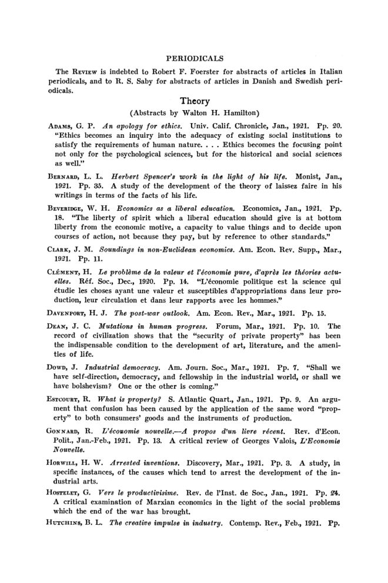

Miller, o Federal Reserve e a comercialização agrícola
Leitura: 23 min
Miller defende que o Federal Reserve previna a expansão do crédito; cinco textos discutem a comercialização agrícola; Avé-Lallemant, o contrato coletivo; Feis, a indústria britânica.


No outono de 1920, em plena campanha presidencial, o Federal Reserve foi atacado com dureza nas regiões que mais sentiram a queda dos preços. A. C. Miller, membro do Federal Reserve Board, abre a American Economic Review de junho de 1921 lembrando que o sistema não cedeu a pressões regionais nem políticas, e usa o episódio como ponto de partida para propor uma mudança de método: o banco central deveria agir sobre o crédito enquanto a expansão ainda está em formação, e não depois que ela aparece nas reservas.
O número 2 do volume XI reúne ainda cinco textos lidos na 33ª reunião anual da American Economic Association, em Atlantic City, em 29 de dezembro de 1920, todos sobre a comercialização de produtos agrícolas. James E. Boyle, da Cornell University, decompõe o problema em cinco etapas; Fred E. Clark, da Northwestern University, propõe critérios para medir a eficiência da comercialização; Asher Hobson, da Columbia University, examina a situação das cooperativas de agricultores diante das leis antitruste; H. Bruce Price, de Yale, trata da padronização dos grãos; e B. H. Hibbard, da University of Wisconsin, discute a estabilização dos preços. Theodore M. Avé-Lallemant, de Nova York, separa a negociação coletiva do contrato coletivo de trabalho, e Herbert Feis, de Harvard, faz o balanço da indústria britânica do armistício ao início de 1921. Fecham a edição resenhas, listas de livros novos, documentos, resumos de periódicos, a décima oitava lista de teses de doutorado em andamento e notas.
O banco central deve esperar a expansão do crédito ou preveni-la?
A. C. Miller (Federal Reserve Board) · “Federal Reserve Policy” · pp. 177–206
Miller parte de um balanço. Em pouco mais de seis anos de funcionamento, diz, o sistema enfrentou uma variedade de problemas maior do que qualquer outro sistema de bancos de reserva: ajudou o Tesouro nos empréstimos de curto prazo, deu base de crédito às exportações para a Europa e evitou que a queda de preços dos oito meses anteriores se transformasse em colapso, sem pôr em risco o padrão-ouro. O autor organiza a análise em três políticas, a do ouro, a da moeda e a do crédito, e sustenta que as duas primeiras são, no fundo, elementos da terceira: regular o fluxo e o volume do crédito é a função primária dos bancos de reserva.
O núcleo histórico do artigo é 1919. Da entrada na guerra até o fim daquele ano, as taxas de redesconto ficaram em níveis artificialmente baixos para ajudar o Tesouro a colocar seus títulos, com taxas preferenciais para o papel garantido por títulos públicos. Enquanto vigoraram os controles de guerra sobre produção, comércio e consumo, o efeito foi contido; com a retirada deles após o armistício, o crédito criado na guerra se difundiu, os preços subiram e a especulação em terras, mercadorias e ações ganhou força. As advertências diretas aos bancos não deram resultado. Para Miller, se o sistema tivesse regulado o crédito em 1919 com a eficácia que teve em 1920, teria evitado boa parte das dificuldades do ano seguinte.
Em janeiro de 1920, a taxa do papel comercial foi elevada para 6% em todos os bancos de reserva; no início do verão, para 7% nos maiores. Miller rejeita a leitura de que essas altas foram impostas pela posição das reservas: o objetivo, diz, era conter a expansão do crédito. Recusa também a proposta de guiar o redesconto por índices de preços. Reconhece seu mérito abstrato, mas observa que a lei não a autoriza e que o público americano, sensível ao medo da contração, não toleraria uma política declaradamente baseada em preços.
“A prevenção, mais do que o controle, deveria ser o objetivo de uma política de crédito competente.” (“Prevention, rather than control, should be the objective of a competent credit policy”)
A proposta final é tornar o coeficiente de reservas um indicador mais sensível. Os balanços semanais passariam a separar a reserva contra depósitos, fixada em cerca de 45% dos depósitos, da reserva em ouro contra as notas, que absorveria as entradas e saídas de ouro. Qualquer expansão dos empréstimos apareceria logo na queda do coeficiente de depósitos, e o ouro vindo da Europa ficaria guardado como uma super-reserva.
Quem é o culpado pelas perdas na comercialização agrícola?
James E. Boyle (Cornell University) · “Marketing of Agricultural Products” · pp. 207–213
Boyle abre com a frase de um agricultor da Dakota do Norte: “Malditos intermediários! Quem me dera ser um!” (“Damn these middlemen! I wish I was one!”). Em seguida dá voz à resposta do intermediário, para quem ineficiente é a lavoura. Um agricultor comum colhe 54 alqueires de milho por acre, mas a média americana é de 27; um bom produtor de trigo colhe 28, e a média é 14. As ervas daninhas, acrescenta, custam mais de um bilhão de dólares por ano em produção perdida. A conclusão do autor é que repreender não adianta: um sistema de comercialização perfeito depende de um sistema de produção perfeito.
O mercado ideal, diz Boyle, seria aquele em que um cinquenta e dois avos da safra anual fosse produzido, vendido e consumido a cada semana, com quantidade, qualidade, demanda e preço constantes e pagamento à vista. Não haveria problema de crédito, de armazenagem, de classificação nem de preço. A realidade é outra. O mundo consome em média três bilhões e meio de alqueires de trigo por ano, e a oferta varia meio bilhão para cima ou para baixo de um ano para o outro. O intermediário existe para corrigir quatro desajustes entre produção e consumo, de tempo, lugar, quantidade e qualidade, e assume dois riscos: a oscilação dos preços e a perecibilidade.
A comercialização, define o autor, vai da produção de um bem vendável até sua chegada à casa do consumidor, e tem cinco etapas: produção, armazenagem, transporte, crédito e venda. Na produção, o agricultor deveria pôr no mercado as melhores classes e guardar as piores, além de vender produtos classificados e padronizados, como fazem as grandes cooperativas com marcas próprias. Na armazenagem, deveria possuir parte dos armazéns, como os Canadian Grain Growers, cerca de 20 mil, que têm armazéns terminais. No transporte, o grande vazamento são as estradas rurais: levar algodão ou trigo da fazenda à estação custa mais que o frete do litoral atlântico a Liverpool.
No crédito, Boyle recomenda o aceite comercial previsto no sistema do Federal Reserve e o recibo de armazém, que tornam o financiamento da safra mais fácil e mais barato quando o produto está classificado e guardado. Na venda, defende a negociação coletiva, mas adverte que o custo de produção não é a base correta do preço: qualquer preço fixado precisa refletir a oferta e a demanda, ou gerará excedente ou escassez.
Como saber se a comercialização é eficiente?
Fred E. Clark (Northwestern University) · “Criteria of Marketing Efficiency” · pp. 214–220
Clark distingue dois pontos de vista no estudo da comercialização. O privado, adotado pelos bureaus de pesquisa empresarial de Harvard e da Northwestern e pela maior parte do trabalho do Bureau of Markets, busca aumentar o lucro de empresas ou de classes de empresários. O social, que é o dele, olha para a comercialização como um mecanismo que leva bens do produtor ao consumidor e pergunta se ele pode funcionar de forma mais eficaz e mais econômica. Em última análise, diz, isso equivale a ver o mercado pelos olhos do consumidor, porque o fim social da comercialização é satisfazer as necessidades dele.
Daí três critérios: a eficácia do serviço prestado; o custo desse serviço, incluindo os lucros de quem participa dele, seja produtor, consumidor ou intermediário; e o efeito do sistema sobre a produção e o consumo. Um sistema eficaz mas caro é ineficiente, e também o é um sistema barato mas ineficaz. Mesmo um mecanismo eficaz e econômico não é eficiente se prejudica a produção ou o consumo. Os dois primeiros critérios, nota o autor, costumam ser estudados juntos; o terceiro envolve questões mais difíceis, que só a guerra e os controles de preços tornaram urgentes.
Os problemas técnicos se dividem em dois grupos. Um é mecânico: estradas ruins, ferrovias limitadas, terminais congestionados e mercados atacadistas mal planejados. O outro é comercial e diz respeito à transferência da propriedade: o serviço de informação de mercado, a adequação do sistema de preços, a proteção legal das partes, os custos de padronização, de negociação e de criação de demanda, os riscos e o financiamento. A maior parte das críticas, observa Clark, atinge o regime competitivo, que os economistas consideram o melhor conhecido, mas que seleciona devagar quando as condições mudam depressa.
Como remédio, o autor aponta duas formas de ação já em uso: a assistência do governo, como as estimativas de safra, e a cooperação privada, por combinação de empresas ou cooperativas de produtores e consumidores. Ambas podem melhorar a informação, ajustar a produção ao mercado, aperfeiçoar mercados centrais e transportes, ampliar a classificação dos produtos, eliminar intermediários desnecessários e conter lucros excessivos. Clark adverte, porém, que uma margem de 50% ou mais entre produtor e consumidor não prova ineficiência: o serviço pode ser caro e bem feito, e o consumidor que exige muito serviço precisa pagar por ele. Os ganhos da produção especializada em grande escala, conclui, são em parte compensados por custos de distribuição maiores.
As cooperativas de agricultores violam as leis antitruste?
Asher Hobson (Columbia University) · “Farmers' Co-Operative Associations: Their Legal and Legislative Aspects” · pp. 221–226
Hobson limita o tema à legislação que define a situação das cooperativas de agricultores diante das leis antitruste federais. O ponto de partida é a Seção 6 da emenda Clayton, de 1914, segundo a qual o trabalho humano não é mercadoria e as organizações agrícolas sem capital em ações e sem fins lucrativos, criadas para ajuda mútua, não podem ser tratadas como combinações ilegais. A intenção do Congresso, diz o autor, era clara; o efeito, não. Muitos advogados admitiam não saber como interpretar o texto sem uma decisão judicial, e a Federal Trade Commission, ao tratar da California Associated Raisin Company, indicara que os atos das cooperativas continuavam sujeitos à lei.
Para Hobson, a emenda tornou a situação das cooperativas mais incerta e tinha ainda um defeito econômico: exigia a forma sem capital em ações, que muitos estados nem previam e que obrigaria a reorganizar a maioria das cooperativas existentes, organizadas com ações. Desde o ano fiscal de 1914, o Congresso inseria na verba do Departamento de Justiça uma cláusula que proibia processar agricultores que se organizassem para obter um preço justo e razoável, expressão que ficava indefinida. Os projetos Capper-Hersman, de isenção total, morreram nas comissões.
O autor dá mais esperança aos projetos Capper-Volstead. Pelas suas regras, as associações seriam formadas só por agricultores, para ajuda mútua e não para lucro; a Federal Trade Commission investigaria as que elevassem indevidamente os preços e poderia ordenar que cessassem a prática; se a ordem não fosse cumprida em 30 dias, o caso iria ao procurador-geral. A legalidade seria medida pelo efeito sobre o bem-estar público, e não pelo critério de competição contra monopólio, que Hobson julga inadequado.
À acusação de legislação de classe, o autor responde com a natureza da agricultura. A fazenda é ao mesmo tempo empresa e casa, e só uma pequena fração de 1% da produção agrícola americana vinha de fazendas sob administração corporativa; pelo menos um quarto dos agricultores, estima, não recebia remuneração em dinheiro pelo trabalho depois de descontadas as despesas e juros de 5% sobre a terra e o equipamento. A cooperativa, por sua natureza uma organização de limitações, tem negócios públicos e fica mais exposta a processos do que a grande empresa. O projeto passou na Câmara em 31 de maio e no Senado em 15 de dezembro de 1920, mas o Senado acrescentou uma emenda que, para Hobson, anularia seu propósito.
Quem deve definir o que é um grão de primeira?
H. Bruce Price (Yale University) · “Grain Standardization” · pp. 227–230
Price começa pela história. Com o crescimento da produção de grãos em meados do século XIX, a venda por amostra deixou de bastar: armazéns usados por vários donos, grandes volumes negociados entre pessoas que não se conheciam e contratos com prazo exigiam uma nova linguagem comercial, capaz de servir de base comum para comparar valores. A classificação e a inspeção couberam primeiro às bolsas de grãos. Em Minneapolis, o primeiro inspetor foi contratado pela federação dos moleiros, antes que a câmara de comércio assumisse o serviço; em Boston e na Filadélfia, o inspetor-chefe chegou a cobrar as taxas e cuidar das finanças do serviço, arranjo abandonado porque a tentação de manipular os padrões em proveito próprio era grande demais.
A inspeção pelas bolsas, onde se encontram compradores e vendedores, tende a ser mais imparcial do que seria sob controle de produtores ou de consumidores, diz o autor, e dá estabilidade aos inspetores. Mas as mudanças ocasionais de padrões em períodos de manipulação, ou seu rebaixamento quando a safra é ruim, minaram a confiança. Isso cria um risco de mercado que se paga com uma margem maior entre produtor e consumidor e alimentou o movimento pela inspeção estadual e pelo controle federal. Os serviços estaduais e a supervisão federal, reconhece Price, lideraram a adoção de novos métodos e equipamentos.
A uniformidade tem três dimensões: entre o grão que entra e o que sai de um mercado, entre mercados diferentes e ao longo do tempo. Sem ela, a terminologia confunde, os preços oscilam mais e os riscos encarecem a comercialização. Price lembra o trigo de primavera da safra de 1915, desviado de Minneapolis para Chicago, onde obtinha classes e preços melhores: a concorrência entre mercados passou a se dar também nas classes, o que rebaixou os padrões. Classes mais técnicas, com limites definidos de material estranho, desestimulam a mistura e a adulteração.
O autor examina por fim duas críticas que julga exageradas. A suspeita de que os mercados inspecionam a entrada e a saída com padrões diferentes não se confirmou na análise de reinspeções e recursos. E a crença de que o preço do grão ignora o valor das impurezas foi desmentida por estudos feitos em Minneapolis em 1916 com C. H. Bailey: as impurezas que prejudicam a farinha deprimem o preço, e as separáveis e valiosas podem render prêmio.
É possível tirar as oscilações dos preços agrícolas?
B. H. Hibbard (University of Wisconsin) · “Stabilization of Prices” · pp. 231–236
Hibbard distingue dois modos de formar preços: a venda à vista e a especulativa. Na primeira, o melhor exemplo organizado é a California Fruit Growers' Exchange, que não especula, mas abastece o mercado geograficamente com base em informação minuciosa e elimina custos de intermediação. Na segunda, há dois tipos. Num, o intermediário compra por sua conta produtos que o consumidor ainda não quer, como algodão, grãos e gado. No outro, de que são exemplo os produtores de passas e de nozes, os próprios produtores guardam a safra e a vendem conforme a demanda, a um preço calculado com base em informação completa sobre a oferta.
A acusação de monopólio contra esses grupos, diz o autor, importa menos do que a pergunta sobre sua utilidade social; e eles não parecem predatórios, porque aceitam novos membros todo ano e não limitam a oferta. Hibbard nota uma assimetria: quando os preços sobem, como em 1918 e 1919, ninguém culpa os especuladores; quando caem, como o trigo no fim de 1920, a acusação vem de todo o país. Se os especuladores realmente derrubassem o preço na colheita para subi-lo na primavera, o remédio seria guardar o trigo, e outros especuladores apostariam na alta. As estatísticas, porém, mostram que o trigo em maio costuma valer só quatro ou cinco centavos acima do preço de dezembro.
O mercado futuro foi condenado por todas as organizações de agricultores de peso, da Grange de 1870 à federação dos Farm Bureaus de 1920, mas poucos estudiosos chegaram à mesma conclusão; a maior parte das evidências, segundo Hibbard, mostra que a especulação organizada estabiliza o mercado. Os remédios propostos são três: a propriedade de toda a cadeia de comercialização, por cooperação voluntária ou com ajuda do Estado; a ação cooperativa de grandes grupos, como os United Farmers of Canada; e o controle da produção pelos próprios produtores, com venda em conjunto ao longo da safra, como fazem os de nozes e de passas.
Para o trigo, as dificuldades são grandes: há um milhão e meio de produtores nos Estados Unidos, o trigo cresce em muitas fazendas que hoje não o plantam, vão só quatro meses da semeadura à colheita, e os canadenses venderiam ao preço mundial. Uma grande empresa de agricultores, com especialistas e acesso às bolsas existentes, poderia estabilizar preços sem abandonar o mercado. Hibbard recomenda prudência, usar a máquina existente em vez de descartá-la antes que a sucessora exista sequer em projeto, mas conclui que a oferta e a demanda precisam operar “segundo regras, e não como foras da lei” (“according to rule instead of as outlaws”).
Negociar em grupo é o mesmo que contratar em grupo?
Theodore M. Avé-Lallemant (Nova York) · “The Collective Labor Contract” · pp. 237–251
Avé-Lallemant começa pela terminologia. O que chama de contrato coletivo de trabalho corresponderia, em francês, ao contrat collectif d'ouvrage e, em alemão, ao Gruppen-Werkvertrag: um contrato coletivo por obra, e não por tempo. O pano de fundo é o debate do fim de 1920. Herbert Hoover, num discurso de 19 de novembro, defendera uma concepção ampla de negociação coletiva e o programa da Segunda Conferência Industrial convocada pelo presidente. O autor nota, porém, que o grupo dos empregadores na Primeira Conferência Industrial negara existir um direito de negociar coletivamente: o direito de se organizar seria legal, e o de negociar em grupo, apenas contratual, dependente da vontade do empregador.
Os empregadores argumentavam que cerca de 98% dos estabelecimentos manufatureiros tinham menos de 250 empregados e 95% menos de 100, de modo que o contato pessoal bastaria; para os maiores, recomendavam comitês de fábrica. Avé-Lallemant vê nisso dois obstáculos: o sentimentalismo de quem descreve como pessoal uma relação que, no mesmo fôlego, declara contratual, e a recusa em ver os fatos da evolução industrial. Para corrigi-los, propõe voltar a Adam Smith e ao primeiro capítulo da Riqueza das Nações, mas com a crítica de Wakefield: toda melhoria na produtividade do trabalho, inclusive a divisão das ocupações, depende da cooperação, que pode ser simples, quando várias pessoas ajudam umas às outras na mesma tarefa, ou complexa, quando trabalham em ocupações diferentes.
A administração científica, diz o autor, depende dessa coordenação, que é cooperação e exige trabalho mental de cada operário. A forma de remuneração deveria seguir a organização do trabalho, mas não segue. Ele lembra o empreiteiro inglês Thomas Brassey, que entregava trechos de obra a turmas de dez a quinze homens, com divisão igual do resultado e um adicional para o chefe; os braccianti italianos organizados sob a lei de 1889; e as turmas de rebitadores dos estaleiros americanos, que dividem o ganho meio a meio, embora a empresa os pague de forma diferente.
A distinção central é jurídica. A negociação coletiva apenas fixa os termos de tantos contratos individuais quantos são os trabalhadores; o contrato coletivo de trabalho é um único contrato para todos os que cooperam. No salário por tempo, o pagamento é determinado e a tarefa, indeterminada, e por isso o assalariado fica sujeito às ordens do patrão; o contrato comum seria, na expressão do autor, um pseudocontrato. A cooperação é um valor intangível, que não cabe em contrato e só é dada por lealdade a um grupo. Por isso, conclui, o grupo contratante pode entregar mais do que a soma do que seus membros entregariam em contratos individuais.
A indústria britânica se recuperou da guerra?
Herbert Feis (Harvard University) · “The Industrial Situation in Great Britain: From the Armistice to the Beginning of 1921” · pp. 252–267
Feis enumera primeiro as dificuldades. A Grã-Bretanha teve de reabsorver um grande exército, enfrentar a exigência dos trabalhadores organizados por um novo status e mais poder de controle e atravessar pelo menos três greves graves, nas ferrovias, nas minas de carvão e na siderurgia. Suas grandes indústrias exportadoras vendiam para um mundo em boa parte desorganizado: a Rússia deixara de fornecer matérias-primas, a Alemanha não podia comprar, e a oscilação dos preços e do câmbio tornava o comércio arriscado. O melhor caminho para entender a situação, diz, é comparar a produção com a de antes da guerra.
O carvão, pedra angular da indústria britânica, é o caso mais grave. A produção média de 1909 a 1913 fora de 287 milhões de toneladas; em 1919, de 230 milhões. As exportações caíram de 73 milhões para 25 milhões de toneladas em 1920. O autor atribui a queda ao esgotamento dos veios mais fáceis, à depreciação do equipamento, à redução da jornada e, nos últimos anos, à disposição dos mineiros, que em grande maioria queriam alguma forma de nacionalização. Na siderurgia e na construção naval houve recuperação: a produção de aço de 1920 superou a de 1913, e a tonelagem lançada ao mar também.
No comércio exterior, o déficit de mercadorias caiu de 784 milhões de libras em 1918 para 378 milhões em 1920. Somadas as receitas de fretes, investimentos e serviços financeiros, o balanço geral de 1920 fechou com saldo positivo de 165 milhões, o primeiro desde 1913. Medidas a preços de 1913, porém, as exportações de produtos britânicos eram cerca de 36% menores que antes da guerra. Nas finanças públicas, a receita igualou a despesa pela primeira vez desde 1913, e a dívida nacional, que chegara a 8.079 milhões de libras em dezembro de 1919, recuara para 7.817 milhões em janeiro de 1921.
O ponto crítico é o trabalho. O desemprego nos ofícios organizados, de 2,1% em 1913, chegou a 8,5% em fevereiro de 1921, o maior desde o inverno de 1908-1909, e os empregadores iniciavam a primeira campanha organizada de redução geral de salários. Feis prevê conflito sério se os empregadores não tratarem os sindicatos com franqueza e não aceitarem lucros menores, e considera a queda do custo de vida o único fator realmente encorajador. Num pós-escrito, registra a greve dos mineiros por uma escala nacional de salários e um fundo nacional de lucros.
O que mais há na edição?
As resenhas incluem The Place of Science in Modern Civilization, de Thorstein Veblen, por Walton H. Hamilton; três livros de sociologia, de Grove Samuel Dow, James Quayle Dealey e F. Mueller-Lyer, por Henry Pratt Fairchild; Elementary Economics, de Thomas Nixon Carver, por Charles E. Persons; The World's Food Resources, de J. Russell Smith, por A. B. Wolfe; o relatório do censo sobre centrais elétricas preparado por Edmund E. Lincoln, por Arthur S. Dewing; os livros de Paul T. Cherington e C. S. Duncan sobre comercialização, por Homer B. Vanderblue; How to Manage Men, de E. H. Fish, por Walter J. Matherly; o estudo de John Henry Williams sobre o comércio argentino sob papel-moeda inconversível, por Harry Gunnison Brown; Bank Credit, de Chester Arthur Phillips, por William A. Scott; Tax Procedure, de Robert M. Montgomery, por Carl C. Plehn; Introduction to Public Finance, de Plehn, por Rufus S. Tucker; o livro de Robert F. Foerster sobre a emigração italiana, por Fairchild; e Public Health and Insurance, de Sir Arthur Newsholme, por C. E. Turner. Floyd L. Vaughan resume o relatório da Federal Trade Commission sobre o comércio de grãos. A décima oitava lista de teses inclui a do próprio Herbert Feis, sobre princípios salariais para uma política de paz industrial, prevista para 1921 em Harvard. As notas anunciam que a próxima reunião anual será em Pittsburgh, provavelmente de 27 a 29 de dezembro.
Na minha leitura
Na minha leitura, o número de junho de 1921 é um estudo sobre sinais e regras. Miller quer que o coeficiente de reservas avise a tempo que o crédito está se expandindo, e propõe mudar a contabilidade do banco central para que o indicador meça uma só coisa; Price mostra que uma classe de grão só serve de linguagem comum se não mudar ao sabor do mercado; Hibbard pergunta se o preço oscila por culpa de quem o observa ou de quem despeja oferta sem coordenação. Em todos, a informação vem antes da intervenção.
Clark, Hobson e Avé-Lallemant tratam do mesmo problema pelo lado das instituições: quando a coordenação entre agentes falha, o que deve substituí-la? A cooperativa supervisionada, o contrato de grupo e a informação pública de mercado são respostas diferentes à mesma dificuldade de organizar a cooperação sem abolir a concorrência. Feis fornece o contraponto empírico: na Grã-Bretanha de 1920, deflação, câmbio e salários dependiam de um acordo que nenhum indicador sozinho poderia produzir.
Glossário
- Redesconto
- empréstimo do banco central a um banco, garantido por títulos que este já descontou.
- Coeficiente de reservas
- razão entre as reservas de um banco central e seus passivos em depósitos e notas.
- Elemento fiduciário
- parte das notas emitidas que não tem cobertura em ouro.
- Papel de empréstimo de guerra
- título de crédito garantido por títulos da dívida pública emitidos na guerra.
- Aceite comercial
- letra de câmbio aceita pelo comprador, que pode ser descontada num banco.
- Recibo de armazém
- documento que comprova a guarda de uma mercadoria e serve de garantia para empréstimos.
- Pool
- venda conjunta em que o resultado é dividido entre os produtores conforme a quantidade e a classe entregues.
- Mercado futuro
- negociação de contratos para entrega da mercadoria numa data posterior.
- Contrato coletivo de trabalho
- contrato único entre o empregador e um grupo de trabalhadores para uma obra, em vez de contratos individuais.
- Dívida flutuante
- dívida pública de curto prazo, renovada com frequência.
Artigos (8)
- Federal Reserve Policy — A. C. Miller (Federal Reserve Board) (pp. 177–206) · resenha acima · comentário completo · JSTOR
- Marketing of Agricultural Products — James E. Boyle (Cornell University) (pp. 207–213) · resenha acima · JSTOR
- Criteria of Marketing Efficiency — Fred E. Clark (Northwestern University) (pp. 214–220) · resenha acima · JSTOR
- Farmers' Co-Operative Associations: Their Legal and Legislative Aspects — Asher Hobson (Columbia University) (pp. 221–226) · resenha acima · JSTOR
- Grain Standardization — H. Bruce Price (Yale University) (pp. 227–230) · resenha acima · JSTOR
- Stabilization of Prices — B. H. Hibbard (University of Wisconsin) (pp. 231–236) · resenha acima · JSTOR
- The Collective Labor Contract — Theodore M. Avé-Lallemant (Nova York) (pp. 237–251) · resenha acima · JSTOR
- The Industrial Situation in Great Britain: From the Armistice to the Beginning of 1921 — Herbert Feis (Harvard University) (pp. 252–267) · resenha acima · comentário completo · JSTOR
Resenhas (13)
- The Place of Science in Modern Civilization and Other Essays (Thorstein Veblen) — Walton H. Hamilton (Amherst College) (pp. 268–271). Resenha da coletânea de ensaios de Veblen. JSTOR
- Introduction to the Principles of Sociology (Grove Samuel Dow); Sociology: Its Development and Applications (James Quayle Dealey); The History of Social Development (F. Mueller-Lyer) — Henry Pratt Fairchild (New York University) (pp. 271–274). Resenha conjunta de três obras de sociologia. JSTOR
- Elementary Economics (Thomas Nixon Carver) — Charles E. Persons (pp. 274–277). Resenha do manual de Carver. JSTOR
- The World's Food Resources (J. Russell Smith) — A. B. Wolfe (University of Texas) (pp. 282–286). Resenha do livro de Smith sobre os recursos alimentares do mundo. JSTOR
- Central Electric Light and Power Stations with Summary of the Electrical Industries, 1917 (Edmund E. Lincoln) — Arthur S. Dewing (pp. 288–291). Resenha do relatório do Bureau of the Census sobre centrais elétricas. JSTOR
- Elements of Marketing (Paul T. Cherington); Marketing, its Problems and Methods (C. S. Duncan) — Homer B. Vanderblue (pp. 293–296). Resenha conjunta de dois livros sobre comercialização. JSTOR
- How to Manage Men. The Principles of Employing Labor (E. H. Fish) — Walter J. Matherly (pp. 298–300). Resenha do livro de Fish sobre administração de pessoal. JSTOR
- Argentine International Trade under Inconvertible Paper Money 1880-1900 (John Henry Williams) — Harry Gunnison Brown (pp. 308–313). Resenha do estudo de Williams sobre o comércio argentino sob papel-moeda inconversível. JSTOR
- Bank Credit (Chester Arthur Phillips) — William A. Scott (pp. 313–315). Resenha do livro de Phillips sobre os princípios do crédito bancário. JSTOR
- Tax Procedure, 1921 (Robert M. Montgomery) — Carl C. Plehn (University of California) (pp. 320–325). Resenha do manual de Montgomery sobre procedimento tributário. JSTOR
- Introduction to Public Finance (Carl C. Plehn) — Rufus S. Tucker (pp. 325–327). Resenha do manual de finanças públicas de Plehn. JSTOR
- The Italian Emigration of Our Times (Robert F. Foerster) — Henry Pratt Fairchild (pp. 329–330). Resenha do livro de Foerster sobre a emigração italiana. JSTOR
- Public Health and Insurance (Sir Arthur Newsholme) — C. E. Turner (pp. 333–335). Resenha do livro de Newsholme sobre saúde pública e seguro. JSTOR
Novos livros (16)
- New Books (pp. 277–278). Lista de livros novos: obras gerais, teoria e sua história. JSTOR
- New Books (pp. 279–282). Lista de livros novos: história econômica e geografia. JSTOR
- New Books (pp. 286–288). Lista de livros novos: agricultura, mineração, florestas e pesca. JSTOR
- New Books (pp. 291). Lista de livros novos: indústria manufatureira. JSTOR
- New Books (pp. 291–293). Lista de livros novos: transportes e comunicações. JSTOR
- New Books (pp. 297–298). Lista de livros novos: comércio e crises comerciais. JSTOR
- New Books (pp. 300–304). Lista de livros novos: contabilidade, métodos de negócios, investimentos e bolsas. JSTOR
- New Books (pp. 304). Lista de livros novos: capital e organizações capitalistas. JSTOR
- New Books (pp. 304–308). Lista de livros novos: trabalho e organizações trabalhistas. JSTOR
- New Books (pp. 315–320). Lista de livros novos: moeda, preços, crédito e bancos. JSTOR
- New Books (pp. 327–329). Lista de livros novos: finanças públicas, tributação e tarifas. JSTOR
- New Books (pp. 330–331). Lista de livros novos: população e migração. JSTOR
- New Books (pp. 331–333). Lista de livros novos: problemas sociais e reformas. JSTOR
- New Books (pp. 335–336). Lista de livros novos: seguros e pensões. JSTOR
- New Books (pp. 336–337). Lista de livros novos: pauperismo, caridade e assistência. JSTOR
- New Books (pp. 338–339). Lista de livros novos: socialismo e cooperação. JSTOR
Documentos, periódicos e notas (4)
- Documents, Reports, and Legislation — Floyd L. Vaughan (Brown University) (pp. 340–350). Documentos e relatórios, com resumo do relatório da Federal Trade Commission sobre o comércio de grãos. JSTOR
- Periodicals (pp. 351–387). Resumos de artigos de periódicos, por tema. JSTOR
- Eighteenth List of Doctoral Dissertations in Political Economy in Progress in American Universities and Colleges (pp. 388–398). Décima oitava lista de teses de doutorado em economia política em andamento nas universidades americanas. JSTOR
- Notes (pp. 399–408). Notas da associação: próxima reunião anual em Pittsburgh, venda de publicações excedentes, nomeações. JSTOR
Fontes
- Federal Reserve Policy (pp. 177–206). JSTOR · Internet Archive (PDF)
- Marketing of Agricultural Products (pp. 207–213). JSTOR · Internet Archive (PDF)
- Criteria of Marketing Efficiency (pp. 214–220). JSTOR · Internet Archive (PDF)
- Farmers' Co-Operative Associations: Their Legal and Legislative Aspects (pp. 221–226). JSTOR · Internet Archive (PDF)
- Grain Standardization (pp. 227–230). JSTOR · Internet Archive (PDF)
- Stabilization of Prices (pp. 231–236). JSTOR · Internet Archive (PDF)
- The Collective Labor Contract (pp. 237–251). JSTOR · Internet Archive (PDF)
- The Industrial Situation in Great Britain: From the Armistice to the Beginning of 1921 (pp. 252–267). JSTOR · Internet Archive (PDF)
- [untitled] The American Economic Review, (1921-06-01), pages 268-271 (pp. 268–271). JSTOR · Internet Archive (PDF)
- [untitled] The American Economic Review, (1921-06-01), pages 271-274 (pp. 271–274). JSTOR · Internet Archive (PDF)
- [untitled] The American Economic Review, (1921-06-01), pages 274-277 (pp. 274–277). JSTOR · Internet Archive (PDF)
- New Books (pp. 277–278). JSTOR · Internet Archive (PDF)
- New Books (pp. 279–282). JSTOR · Internet Archive (PDF)
- [untitled] The American Economic Review, (1921-06-01), pages 282-286 (pp. 282–286). JSTOR · Internet Archive (PDF)
- New Books (pp. 286–288). JSTOR · Internet Archive (PDF)
- [untitled] The American Economic Review, (1921-06-01), pages 288-291 (pp. 288–291). JSTOR · Internet Archive (PDF)
- New Books (pp. 291). JSTOR · Internet Archive (PDF)
- New Books (pp. 291–293). JSTOR · Internet Archive (PDF)
- [untitled] The American Economic Review, (1921-06-01), pages 293-296 (pp. 293–296). JSTOR · Internet Archive (PDF)
- New Books (pp. 297–298). JSTOR · Internet Archive (PDF)
- [untitled] The American Economic Review, (1921-06-01), pages 298-300 (pp. 298–300). JSTOR · Internet Archive (PDF)
- New Books (pp. 300–304). JSTOR · Internet Archive (PDF)
- New Books (pp. 304). JSTOR · Internet Archive (PDF)
- New Books (pp. 304–308). JSTOR · Internet Archive (PDF)
- [untitled] The American Economic Review, (1921-06-01), pages 308-313 (pp. 308–313). JSTOR · Internet Archive (PDF)
- [untitled] The American Economic Review, (1921-06-01), pages 313-315 (pp. 313–315). JSTOR · Internet Archive (PDF)
- New Books (pp. 315–320). JSTOR · Internet Archive (PDF)
- [untitled] The American Economic Review, (1921-06-01), pages 320-325 (pp. 320–325). JSTOR · Internet Archive (PDF)
- [untitled] The American Economic Review, (1921-06-01), pages 325-327 (pp. 325–327). JSTOR · Internet Archive (PDF)
- New Books (pp. 327–329). JSTOR · Internet Archive (PDF)
- [untitled] The American Economic Review, (1921-06-01), pages 329-330 (pp. 329–330). JSTOR · Internet Archive (PDF)
- New Books (pp. 330–331). JSTOR · Internet Archive (PDF)
- New Books (pp. 331–333). JSTOR · Internet Archive (PDF)
- [untitled] The American Economic Review, (1921-06-01), pages 333-335 (pp. 333–335). JSTOR · Internet Archive (PDF)
- New Books (pp. 335–336). JSTOR · Internet Archive (PDF)
- New Books (pp. 336–337). JSTOR · Internet Archive (PDF)
- New Books (pp. 338–339). JSTOR · Internet Archive (PDF)
- Documents, Reports, and Legislation (pp. 340–350). JSTOR · Internet Archive (PDF)
- Periodicals (pp. 351–387). JSTOR · Internet Archive (PDF)
- Eighteenth List of Doctoral Dissertations in Political Economy in Progress in American Universities and Colleges (pp. 388–398). JSTOR · Internet Archive (PDF)
- Notes (pp. 399–408). JSTOR · Internet Archive (PDF)
- Sumário da edição no JSTOR: The American Economic Review, vol. 11, nº 2.
Documento em domínio público (EUA, publicado antes de 1931), via JSTOR Early Journal Content e Internet Archive. Resumo e comentário do autor deste site, sem afiliação com a American Economic Association. Encontrou um erro? Escreva: a correção é publicada no próprio texto, com data.
← Nº 169 · Atlantic City, 1920: ferrovias, carvão e o credor que não recebia Nº 171 · Salário real, orçamento de família e o limite da taxa de redesconto →